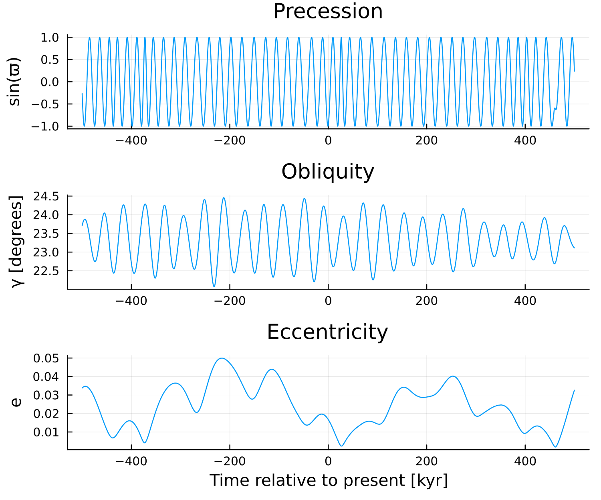
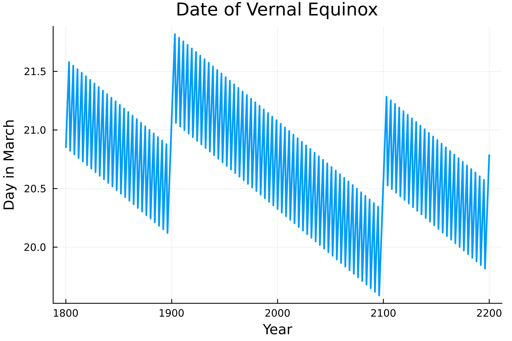
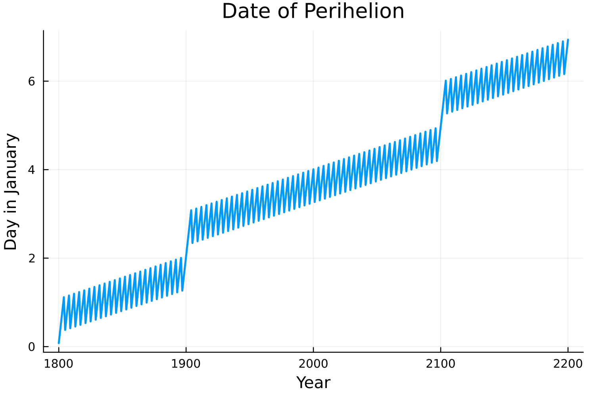
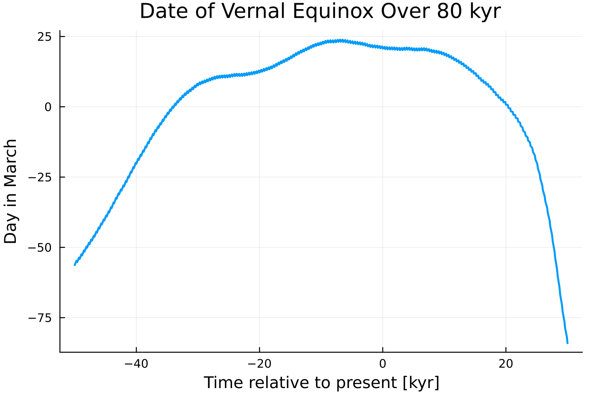
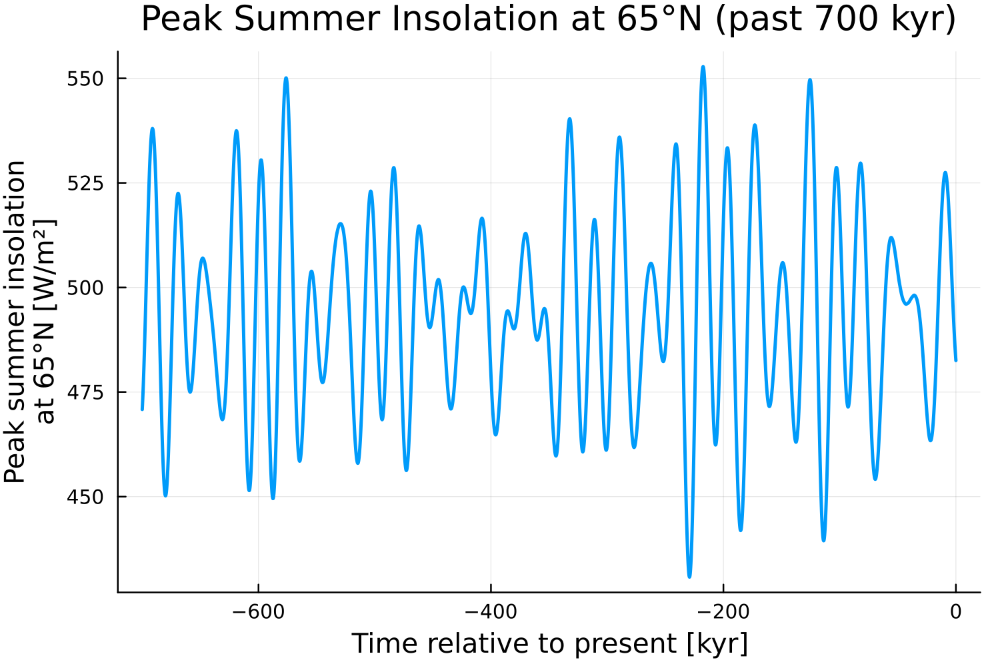

Milankovitch Cycles
Gravitational tugs from the other planets, and torques exerted by the Moon and Sun on Earth's equatorial bulge, make Earth's orbit and spin axis drift slowly over millennia. The resulting variations in eccentricity, obliquity, and the longitude of perihelion are the Milankovitch cycles. They do not change the Sun's output, but they redistribute insolation across latitudes and across the seasons, and they pace the glacial cycles of the past few million years.
Insolation.jl provides the Laskar et al. (2004) solution for Earth's orbital parameters, spanning -50 Myr to +20 Myr around the J2000 epoch. Passing milankovitch = true swaps the fixed epoch parameters for the time-varying ones, which makes paleoclimate calculations a one-line change.
The Three Orbital Parameters
Eccentricity
e: the shape of Earth's orbit. Over the past 50 Myr it has ranged between about 0 (circular) and 0.06, with dominant periods near 405 kyr and 110 kyr (the latter an amplitude-weighted mean of several closely spaced periods, commonly called "the 100-kyr cycle"). Current value: 0.0167, a relatively low point in the cycle.Obliquity
γ: Earth's axial tilt relative to the normal to the orbital plane, varying between 22.1° and 24.5° with a mean period of 41 kyr. Current value: 23.44°, close to its long-term mean and currently declining. Obliquity sets the strength of the seasonal cycle and the equator-to-pole distribution of annual-mean insolation.Longitude of perihelion
ϖ: the angular distance along the orbit from vernal equinox to perihelion, that is, where in the seasonal cycle Earth passes closest to the Sun. It advances through a full revolution with a mean period of 21 kyr, a compound of two motions: the retrograde axial precession of Earth's spin axis, which carries the equinoxes backward around the orbit (the classical precession of the equinoxes, ~26 kyr), and the slower prograde apsidal precession of the orbital ellipse itself (~112 kyr). Currentlyϖ ≈ 283°, so perihelion falls near southern summer solstice.
Precession only matters to the extent that the orbit is eccentric: on a circular orbit, ϖ has no effect at all. The climatically relevant combination is therefore the precession index e sin(ϖ), in which the 19–24 kyr precession band is amplitude-modulated by the much slower eccentricity variations.
Variations in the orbital parameters
using Insolation
using Plots
# Load orbital parameter data (Laskar et al. 2004)
od = OrbitalDataSplines()
# Time range: ±500 kyr around J2000; negative times are in the past
dt = collect(-500e3:100:500e3); # Julian years since J2000
# Extract orbital parameters over time
y = hcat(collect.(orbital_params.(od, dt))...);
ϖ, γ, e = y[1, :], y[2, :], y[3, :];
# Precession: plot sin(ϖ), which is periodic (ϖ itself is stored unwrapped)
p1 = plot(dt ./ 1e3, sin.(ϖ), legend = false);
ylabel!("sin(ϖ)");
title!("Precession");
# Obliquity (axial tilt)
p2 = plot(dt ./ 1e3, rad2deg.(γ), legend = false);
ylabel!("γ [degrees]");
title!("Obliquity");
# Eccentricity (orbital shape)
p3 = plot(dt ./ 1e3, e, legend = false);
ylabel!("e");
xlabel!("Time relative to present [kyr]")
title!("Eccentricity");
plot(p1, p2, p3, layout = grid(3, 1), size = (600, 500), dpi = 250);
savefig("orbital_params.png")
- Top: precession, shown as
sin(ϖ), cycles with a mean period of 21 kyr, with power spread over the 19–24 kyr precession band. - Middle: obliquity oscillates between 22.1° and 24.5° with a mean period of 41 kyr.
- Bottom: eccentricity varies with periods near 100 kyr and 405 kyr. Note how the eccentricity envelope modulates how much the precession cycle can matter.
Calendar Considerations: Equinox and Perihelion Dates
Orbital position is naturally measured by the solar longitude Ls, the angle travelled along the orbit since vernal equinox, which is what fixes the astronomical seasons (Ls = 0° at vernal equinox, 90° at northern summer solstice, and so on). Calendar dates are a different thing altogether, and the two drift apart. Insolation.jl advances the mean anomaly from its J2000 value at the rate of the anomalistic year, so a calendar date is tied to Earth's position relative to perihelion, while the seasons are tied to its position relative to the equinoxes — and perihelion and equinox move relative to each other. It is worth knowing how fast.
Centennial Timescales (1800–2200 CE)
Over a few centuries the drift is small, and what remains is dominated by the four-year leap cycle.
using Insolation
using Roots
using Optim
include("find_equinox_perihelion_dates.jl")
years = 1800:2200;
days_eq = zeros(length(years));
days_per = zeros(length(years));
od = OrbitalDataSplines()
# Find vernal equinox and perihelion dates for each year
for (i, year) in enumerate(years)
# Vernal equinox: when the northern and southern mid-latitudes receive equal insolation
f = (x -> zdiff(x, year, od))
days_eq[i] = find_zeros(f, -30, 60)[1]
# Perihelion: when the planet-star distance is minimal
f = (x -> edist(x, year, od))
res = optimize(f, -50, 50)
days_per[i] = Optim.minimizer(res)[1]
end
plot(years, days_eq, legend = false, dpi = 250, lw = 2)
xlabel!("Year")
ylabel!("Day in March")
title!("Date of Vernal Equinox")
savefig("equinox_dates.png")
plot(years, days_per, legend = false, dpi = 250, lw = 2)
xlabel!("Year")
ylabel!("Day in January")
title!("Date of Perihelion")
savefig("perihelion_dates.png")

Three features stand out in the equinox curve, and all three are calendar artifacts rather than orbital signals. The one-day sawtooth is the leap-year cycle: the equinox slips about a quarter day later for three years, then is pulled back by the February 29 insertion. Within each century the sawtooth drifts downward by about 0.8 days, because a four-year leap cycle averages 365.25 days while the tropical year (equinox to equinox) is 365.2422 days. The upward jumps at 1900 and 2100 — but not at 2000 — are the Gregorian century rule recovering that drift, three days every 400 years.
The Gregorian reform of 1582 CE added the century exception to the Julian calendar's leap year rule. This helped pin vernal equinox near March 21 (in this calculation it lies just past March 20) instead of letting it slide backward by three days per 400 years.
Perihelion, by contrast, drifts steadily later, from January 1 in 1800 to January 7 in
- Nothing is wrong with the calendar here: the Gregorian year is about 0.017 days
shorter than the anomalistic year, so perihelion arrives a little later each year, and over four centuries that accumulates to the six days in the figure. Because the equinox stays put while perihelion advances, the interval from perihelion to vernal equinox shrinks — from 79 days in 1800 to 72 days in 2200, about 1.75 days per century. That is precession — the motion of perihelion relative to the equinox — made visible on a human timescale: 1.75 days per century out of a 365-day year is one revolution in roughly 21 kyr.
Millennial Timescales (50,000 BCE – 30,000 CE)
Over tens of millennia the equinox wanders through the calendar by months. Two large and nearly opposing effects are at work. A Gregorian year of 365.2425 days is about 0.017 days shorter than the anomalistic year, so perihelion — and with it any point of the orbit at fixed phase relative to perihelion — arrives roughly 17 days later in the calendar per millennium. Meanwhile the equinox does not keep a fixed phase relative to perihelion: precession carries it through a full revolution of the orbit in about 21 kyr, moving it earlier relative to perihelion by roughly the same 17 days per millennium. The two nearly cancel today — that near-cancellation is what makes the tropical year, and hence the Gregorian calendar, work — but the precession rate is not constant, so the residual accumulates.
using Insolation
using Roots
include("find_equinox_perihelion_dates.jl")
od = OrbitalDataSplines()
years = -50e3:100:30e3
days_eq = zeros(length(years))
# Calculate the vernal equinox date over 80 kyr
for (i, year) in enumerate(years)
f = (x -> zdiff(x, year, od))
days_eq[i] = find_zeros(f, -100, 100)[1]
end
plot(years ./ 1e3, days_eq, legend = false, dpi = 250, lw = 2)
xlabel!("Time relative to present [kyr]")
ylabel!("Day in March")
title!("Date of Vernal Equinox Over 80 kyr")
savefig("equinox_dates_long.png")
The date is plotted as a day offset from March 1, so negative values run back into February, January, and December: 50 kyr ago vernal equinox fell around December 16 on this calendar. Note how flat the curve is within a few millennia of the present, and how steeply it runs at the ends.
Because the equinoxes and solstices migrate through the calendar, comparing insolation on the same calendar date at two widely separated times compares two different points on the orbit. Twenty-one thousand years ago, for example, northern summer solstice fell in mid-June by this calendar — the example below prints the exact date — so a "June 21" comparison mixes an orbital-parameter change with a seasonal offset of a week or more. Anchor paleoclimate comparisons to a season instead: locate the target solar longitude, or use a calendar-independent diagnostic such as the annual maximum of daily-mean insolation used below. Paleoclimate model intercomparisons conventionally fix vernal equinox to March 21 for the same reason.
Using Milankovitch Cycles in Calculations
To use time-varying orbital parameters, load the orbital data once and pass it along with milankovitch = true:
using Insolation
using Dates
using ClimaParams
# Load orbital data (do this once; construction is expensive)
od = OrbitalDataSplines()
params = InsolationParameters(Float64)
lat = 65.0 # degrees North
# Calendar date and value of the annual maximum of daily-mean insolation.
# Scanning the whole year makes this independent of calendar drift.
function summer_peak(lat, year, params, od)
milankovitch = true
Jan1 = DateTime(year, 1, 1)
F = [daily_insolation(Jan1 + Day(d), lat, params, od, milankovitch).F for d in 0:364]
imax = argmax(F)
return Date(Jan1 + Day(imax - 1)), F[imax]
end
# Year -19000 in astronomical numbering is ~21 kyr before J2000 (Last Glacial Maximum)
day_modern, F_modern = summer_peak(lat, 2000, params, od)
day_lgm, F_lgm = summer_peak(lat, -19000, params, od)
println("Modern: $(round(F_modern, digits = 1)) W/m² on $day_modern")
println("LGM: $(round(F_lgm, digits = 1)) W/m² on $day_lgm")
println("Difference: $(round(F_lgm - F_modern, digits = 1)) W/m²")Modern: 478.3 W/m² on 2000-06-21
LGM: 470.0 W/m² on -19000-06-13
Difference: -8.3 W/m²Two things are worth noting. The peak is about 8 W/m² weaker at the Last Glacial Maximum, and nearly all of that comes from the lower obliquity then (23.0° versus 23.4°); the contemporaneous changes in eccentricity and longitude of perihelion largely offset one another at this latitude. And the peak falls on a different calendar date, which is the calendar drift of the previous section made concrete.
The orbital parameters themselves can be queried directly, indexed in Julian years since J2000:
ϖ, γ, e = orbital_params(od, -21000.0)
println("21 kyr ago: ϖ = $(round(rad2deg(mod(ϖ, 2π)), digits = 1))°, ",
"γ = $(round(rad2deg(γ), digits = 2))°, e = $(round(e, digits = 4))")21 kyr ago: ϖ = 295.2°, γ = 22.96°, e = 0.0188Milankovitch's Diagnostic: Peak Summer Insolation at 65°N
Turning around an earlier argument of James Croll's, which held that glacials begin with long, cold winters, Milankovitch argued that they begin with cool summers: when high-latitude northern summers are too weak to melt the previous winter's snow, ice sheets grow. His own measure was the insolation at 65°N accumulated over the summer half of the year, which he called the "caloric summer half-year"; peak (or solstitial) summer insolation at 65°N is the modern shorthand for it. Milankovitch spent years computing this by hand. Here it is over the past 700 kyr:
using Insolation
using Dates
using ClimaParams
using Plots
od = OrbitalDataSplines()
params = InsolationParameters(Float64)
function peak_summer_insolation(lat, year, params, od)
milankovitch = true
Jan1 = DateTime(round(Int, year), 1, 1)
return maximum(
daily_insolation(Jan1 + Day(d), lat, params, od, milankovitch).F for d in 0:364
)
end
years = collect(-700e3:200:0) # every 200 yr for a smooth curve
F_65N = [peak_summer_insolation(65.0, yr, params, od) for yr in years]
plot(years ./ 1e3, F_65N, legend = false, lw = 2, dpi = 250)
xlabel!("Time relative to present [kyr]")
ylabel!("Peak summer insolation\nat 65°N [W/m²]")
title!("Peak Summer Insolation at 65°N (past 700 kyr)")
savefig("insol_65N_ice_ages.png")
Over the past 700 kyr the peak ranges from about 431 to 553 W/m², a spread of roughly 120 W/m², or 25% of the mean — large enough to be climatically plausible as a trigger. The rapid oscillation is precession, at 19–24 kyr. Its amplitude is visibly modulated by eccentricity on 100- and 405-kyr timescales: the swings are widest near 216 kyr ago, when eccentricity peaked at 0.050, and narrowest near 373 kyr ago, when the orbit was nearly circular at 0.0041 and precession had almost nothing left to modulate. Obliquity adds a weaker 41-kyr signal on top, visible as the alternating heights of successive precession peaks.
The precession signal above is a redistribution within the seasonal cycle, not a change in the energy a season receives. The solar flux falls off as d⁻² while Earth's orbital angular velocity also varies as d⁻² (Kepler's second law), so the two cancel exactly: the energy received over a given arc of the orbit is independent of where in the orbit that arc falls (Herschel's law, 1832). Precession therefore leaves both the annual-mean insolation and the total insolation of each astronomical season unchanged at every latitude — it only trades peak intensity against season length. This is one reason the strong precession signal in the figure above has no clear counterpart in global paleotemperature spectra, whereas the 41-kyr obliquity signal, which does alter annual-mean insolation by latitude, is unmistakable.
The cancellation can be checked directly by turning the orbit halfway around, so that perihelion moves from southern to northern summer, while holding eccentricity and obliquity fixed:
import Insolation.Parameters as IP
ϖ0 = IP.lon_perihelion_epoch(params)
params_flipped = IP.InsolationParameters(Float64, (; lon_perihelion_epoch = ϖ0 + π))
# Average over 1461 days ≈ 4 anomalistic years, so the sum spans whole orbits
annual_mean(p) =
sum(daily_insolation(DateTime(2000, 1, 1) + Day(d), 65.0, p).F for d in 0:1460) / 1461
peak(p) = maximum(daily_insolation(DateTime(2000, 1, 1) + Day(d), 65.0, p).F for d in 0:364)
println("65°N annual mean: ϖ = $(round(annual_mean(params), digits = 2)) W/m², ",
"ϖ + 180° = $(round(annual_mean(params_flipped), digits = 2)) W/m²")
println("65°N summer peak: ϖ = $(round(peak(params), digits = 1)) W/m², ",
"ϖ + 180° = $(round(peak(params_flipped), digits = 1)) W/m²")65°N annual mean: ϖ = 213.84 W/m², ϖ + 180° = 213.83 W/m²
65°N summer peak: ϖ = 478.3 W/m², ϖ + 180° = 510.5 W/m²Moving perihelion from southern to northern summer raises the 65°N summer peak by more than 30 W/m², while leaving the annual mean unchanged to within the sampling error of the discrete daily sum (0.01 out of 214 W/m²).
That such a large seasonal signal leaves no clear fingerprint in global paleotemperature records — while the weaker 41-kyr obliquity signal does — is one of several open questions about how orbital forcing is translated into climate. The 1976 analysis of ocean sediment cores by Hays, Imbrie, and Shackleton established that orbital variations pace the ice ages; the nonlinear feedbacks in the ice sheets and carbon cycle that amplify these insolation shifts — whose global, annual-mean component is only of order 0.1% — into full glacial cycles, and that produce the ~100-kyr sawtooth of the past million years, remain incompletely understood.